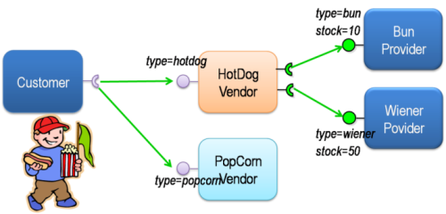

The iPOJO Snack Bar¶
This tutorial illustrates some advanced features of iPOJO
- The iPOJO Snack Bar
- Context
- Preparing the tutorial
- Writing a component providing two services
- Publishing service properties
- Publishing 'dynamic' properties
- Configuring instances
- Using filter in service requirements
- Immediate component instance
- Creating instances from an external component type
- Deploying the application
- Using the lifecycle controller
- Reconfiguring an instance
- Conclusion
Context¶
This tutorial is based on a very simple application; customers are using a vendor service to buy hot dog or pop corn according to the availability of appropriate providers. Both of the vendors implement (and provide) the vendor service. The hot dog vendor depends on two others services to get the ingredients (buns and wiener). To sell pop corn, the pop corn vendor requires having enough corn in stock.

Preparing the tutorial¶
The tutorial archive is available here. This archive contains both the source code and a pre-configured version of Felix. First, unzip the archive. Then, launch ant to compile the bundles composing this tutorial. Once compiled, you can launch Felix and start the tutorial. To launch, Felix launch the following command from the felix directory:
java -jar bin/felix.jar
Writing a component providing two services¶
The sources of this project are inside the vendor.buns-and-wieners directory. The hot dog vendor requires at the same time the bun service and the wiener service. In our application these services are provided by the same component. This component can be implemented as follows (src\org\apache\felix\ipojo\example\vendor\provider\BunWienerProvider.java):
public class BunWienerProvider implements BunService, WienerService { public void getBun() { System.out.println("Get a bun"); } public void getWiener() { System.out.println("Get a wiener"); } }
This class just implements the two service interfaces. Its descriptor (contained in the metadata.xml file) is:
<ipojo> <component classname="org.apache.felix.ipojo.example.vendor.provider.BunWienerProvider" name="buns_and_wieners" public="false"> <provides/> </component> <instance component="buns_and_wieners"/> </ipojo>
In the descriptor, we declare a component type for this vendor which contains the implementation class. The classname attribute contains the qualified name of the component implementation. The "name" attribute is the component type name. It is only used to refer to this type.
The public=false attribute disables factory exposition. A component type publishing a factory provides a way to create instance of this type from outside this descriptor. In our case, we want to guarantee that only one instance (singleton) can be created, so we disable the factory mechanism.
iPOJO manages service publication and providing automatically at runtime. The <provides/> element means that the component provides services. If this element is not present, iPOJO will publish all implemented interfaces by the implementation class (and parent class too). In our case, it will publish the BunService and WienerService interfaces.
Finally, we create one instance of our component. The instance contains the component attribute describing the component type to use. We use the component type name to target the wanted component type.
At runtime, the bundle containing this component will create an instance which provides the BunService and the WienerService.
Publishing service properties¶
The sources of this project are inside the vendor.hotdog directory. The hot dog vendor only provides the Vendor service. To provide this service, it uses a bun service and a wiener service. The following code (contained in the src/org/apache/felix/ipojo/example/vendor/hotdog/HotDogVendor.java file) shows a very simple implementation of this component:
public class HotDogVendor implements Vendor { /** * Bun provider (required service). */ private Bun bunProvider; /** * Wiener provider (required service). */ private Wiener wienerProvider; /** * Sell method. * To provide an hotdog, the vendor consume a bun and a wiener. * This method is synchronized to avoid serving to client * at the same time. * @return a hotdog. * @see org.apache.felix.ipojo.example.vendor.service.Vendor#sell() */ public synchronized Product sell() { bunProvider.getBun(); wienerProvider.getWiener(); return new HotDog(); }
Once implemented, we need to describe this component type. The descriptor file is the metadata.xml file. The field attributes in the "requires" elements are used to inject the required services. At runtime, iPOJO injects automatically a BunService provider in the "bunProvider" field and a WienerService provider in the "wienerProvider" field. The implementation uses these fields the same way it would have used any other fields (as illustrated in the sell method).
<ipojo> <component classname="org.apache.felix.ipojo.example.vendor.hotdog.HotDogVendor" name="HD" public="false"> <provides/> <requires field="bunProvider"/> <requires field="wienerProvider"/> </component> <instance component="HD"/> </ipojo>
The component type declares a provided service (the Vendor Service). Then, the component declares the two service dependencies (using the "requires" element). However, we would like to add a service property on the Vendor service describing the sold product (here, "hotdog"). To achieve this, we just need to add a property element in the "provides" tags:
<ipojo> <component classname="org.apache.felix.ipojo.example.vendor.hotdog.HotDogVendor" name="HD" public="false"> <provides> <property name="product" type="string" value="hotdog"/> </provides> <requires field="bunProvider"/> <requires field="wienerProvider"/> </component> <instance component="HD"/> </ipojo>
iPOJO then publishes the "product" property in the "vendor" service registration. This property has the "hotdog" value.
Publishing 'dynamic' properties¶
The bun service and the wiener service can also expose service properties. In our case, these service properties will describe the stock of ingredients. Each time the service is used, the property value is decreased. To achieve this, we modify the current implementation to add a field representing the property:
public class BunWienerProvider implements BunService, WienerService { private int bunStock; private int wienerStock; public synchronized void getBun() { bunStock = bunStock - 1; } public synchronized void getWiener() { wienerStock = wienerStock - 1; } }
The stock accesses are synchronized to avoid multiple accesses at the same time. The component type metadata must also be modified in order to describe this property:
<ipojo> <component classname="org.apache.felix.ipojo.example.vendor.provider.BunProvider" name="buns_and_wieners" public="false"> <provides> <property name="buns" field="bunStock" value="10"/> <property name="wieners" field="wienerStock" value="10"/> </provides> </component> <instance component="buns_and_wieners"/> </ipojo>
In the provides element, two properties are added. This property contains a field attribute aiming to attach the service property with a field of the implementation class. Then a default value is given. In the code, the property fields will obtain the initial value (10). Then each time the fields are modified, the service property is updated (as well as the OSGi™ service registration). Notice that iPOJO support method injection for property too. In this case, a getter method is called to inject the property value.
Configuring instances¶
In the previous example, the properties were configured in the component type description. It is also possible to customize any property value in the instance declaration. This way, each instance can obtain different values.
<ipojo> <component classname="org.apache.felix.ipojo.example.vendor.provider.BunProvider" name="buns_and_wieners" public="false"> <provides> <property name="buns" field="bunStock" value="10"/> <property name="wieners" field="wienerStock" value="10"/> </provides> </component> <instance component="buns_and_wieners"> <property name="buns" value="9"/> <property name="wieners" value="8"/> </instance> </ipojo>
The previous metadata shows how to push a configuration in instance declarations. The instance declaration contains two property elements containing the name of the value of the property. Instance configuration override component type initial value. Properties are optional by default ; that's means that they do not need to receive a value. In this case, default values are the same as the Java default fields values (boolean : false, int : 0, double : 0.0d, ...). You can specify that a property must receive a default value from either the component type description or the instance configuration by setting the mandatory attribute to true.
Using filter in service requirements¶
Now that bun and wiener providers publish their remaining stock, the hot dog provider can look for a bun service and a wiener service with a non empty stock. To achieve this, we must describe an LDAP filter in the service requirement description. The following XML snipped shows this metadata:
<ipojo> <component classname="org.apache.felix.ipojo.example.vendor.hotdog.HotDogVendor" name="HD" public="false"> <provides> <property name="product" type="string" value="hotdog"/> </provides> <requires field="bunProvider" filter="(buns>=1)"/> <requires field="wienerProvider" filter="(wieners>=1)"/> </component> <instance component="HD"/> </ipojo>
When a provider does no more matches with the LDAP filter, the provider is no more used, and another (matching with the filter) is tracked. If no provider fulfilling the constraint is found, the instance becomes invalid and waits a matching provider.
When an instance becomes invalid, all its provided services are withdrawn from the service registry. So, this instance is no more *accessible* from the service registry.
Immediate component instance¶
Now that we get the hot dog provider, we are going to implement customers. Customers are implemented in the vendor.customer project). A customer simply looks for a vendor service and buys a product:
public class Customer { private VendorService vendor; private String name; public Customer() { System.out.println("Customer " + name + " bought " + vendor.sell() + " from " + vendor.getName()); }
The previous code shows a possible implementation of a customer. However, the "sell" method is called in a constructor, and the constructor can only be called only if an object of the class is created. With iPOJO there are two different way to "activate" an instance as soon as it becomes valid.
The first one uses the lifecycle callback (described in the previous tutorial). The second one is by declaring the component as an immediate component. An immediate component instance creates an object of its implementation as soon as it becomes valid.
<ipojo> <component classname="org.apache.felix.ipojo.example.vendor.customer.Customer" name="customer" immediate="true"> <requires field="vendor"/> <properties> <property field="name"/> </properties> </component> </ipojo>
To declare a component immediate, just add immediate=true in the component descriptor. Then as soon as the vendor service is available, the object is created. Moreover, this type declares a property (to give a name to the customers). This property is not a service property, but just an internal property. As for service properties, the name field will be injected by a value necessary given during the instance creation (i.e. contained inside the instance configuration).
By default, all all components that do not provide any service are immediate. Other components create call their constructors when they are used for the first time.
There is a difference between immediate components and components with a
validate lifecycle callback. Indeed, the callback is call at each time the instance becomes valid and calls the constructor only if no object already exists. On the other side, the immediate component's constructor is call only once.
Creating instances from an external component type¶
In the previous section we have declared a customer component type, which does not have the public=false attribute. This feature allows separate deployment from instance creation. Moreover, we didn't declare instances in the descriptor.
Another metadata file can be used to declare instances from the customer type, this descriptor being contained in another bundle. The following descriptor creates 10 customer instances (look at the vendor.customer.creator\metadata.xml file):
<ipojo> <instance component="customer"> <property name="name" value="customer-1"/> </instance> <instance component="customer"> <property name="name" value="customer-2"/> </instance> <instance component="customer"> <property name="name" value="customer-3"/> </instance> <instance component="customer"> <property name="name" value="customer-4"/> </instance> <instance component="customer"> <property name="name" value="customer-5"/> </instance> <instance component="customer"> <property name="name" value="customer-6"/> </instance> <instance component="customer"> <property name="name" value="customer-7"/> </instance> <instance component="customer"> <property name="name" value="customer-8"/> </instance> <instance component="customer"> <property name="name" value="customer-9"/> </instance> <instance component="customer"> <property name="name" value="customer-10"/> </instance> </ipojo>
Once deployed, this bundle looks for the required factory. If it's not available the bundle waits for the factory. As soon as the required factory is available, all instances are created. When this bundle is stopped, all instances are destroyed.
Deploying the application¶
Compile the bundles, by launching ant at the root of the tutorial. Then launch Felix is indicated above. Once started, launch the following commands
start file:../vendor.services/output/vendor.services.jar start file:../vendor.buns-and-wieners/output/vendor.buns-and-wieners.jar start file:../vendor.hotdog/output/vendor.hotdog.jar start file:../vendor.customer/output/vendor.customer.jar start file:../vendor.customer.creator/output/vendor.customer.creator.jar
Something like this should appear:
Customer customer-1 bought Hotdog from Fenway Park Customer customer-2 bought Hotdog from Fenway Park Customer customer-3 bought Hotdog from Fenway Park Customer customer-4 bought Hotdog from Fenway Park Customer customer-5 bought Hotdog from Fenway Park Customer customer-6 bought Hotdog from Fenway Park Customer customer-7 bought Hotdog from Fenway Park Customer customer-8 bought Hotdog from Fenway Park
Only 8 customers can buy a hot-dog, as the stock of wieners and buns can't supply more hot-dog. The remainder of this tutorial will try to solve the problem of these two hungry customers.
Using the lifecycle controller¶
Sometimes you want to invalidate your instance in the code (for example: to unregister a service). That's possible with the lifecycle controller handler. Let's take the popcorn vendor with a corn stock from the vendor.popcorn project. Each time it sells some popcorn, its stock is decreased. When the stock reaches 0, it cannot sell popcorns any more (so the vendor service needs to be withdrawn).
The following implementation (src\org\apache\felix\ipojo\example\vendor\popcorn\PopCornVendor.java) uses a field to control the lifecycle.
/** * The corn stock. */ private int m_corn_stock; /** * Lifecycle controller. * If set to false, the instance becomes invalid. */ private boolean m_can_sell = true; /** * The sell method. * To provide popcorn, the vendor needs to decrease its corn stock level. * This method is synchronized to avoid to client being serve at * the same time. * @return * @see org.apache.felix.ipojo.example.vendor.service.Vendor#sell() */ public synchronized Product sell() { m_corn_stock--; if (m_corn_stock == 0 && m_can_sell) { // Last pop corn m_can_sell = false; System.out.println("Stop selling popcorn ... Run out of stock"); return new PopCorn(); } else if (m_corn_stock > 0) { // Normal case return new PopCorn(); } else { // Cannot serve. return PopCorn.NO_MORE_POPCORN; } }
Once the field is set to "false", the instance is invalidated (the vendor service is no more available). To configure the controller, you can use the following metadata:
<ipojo> <component classname="org.apache.felix.ipojo.example.vendor.popcorn.PopCornVendor" name="popcorn" public="false" architecture="true"> <provides/> <controller field="m_can_sell"/> </component> <instance component="popcorn"/> </ipojo>
The instance can be re-validated by setting the field to true. So, no deploy the pop corn vendor.
-> start file:../vendor.popcorn/output/vendor.popcorn.jar Customer customer-10 bought popcorn from D & P Customer customer-9 bought popcorn from D & P
Our two last customers are no more hungry. However, new customers arrives, we have the following situation:
-> update 10 Customer customer-1 bought popcorn from D & P Customer customer-2 bought popcorn from D & P Stop selling popcorn ... Run out of stock Customer customer-3 bought popcorn from D & P
To recreate new customers, just update the customer.creator bundle (bundle 10). So, now we have 7 customers hungry! There is neither popcorn nor hotdog!
Reconfiguring an instance¶
OSGi specified the Configuration Admin mechanism aiming to handler service and bundle configuration. This section will describe how you can use the Configuration Admin and iPOJO to add corn inside our popcorn vendor. First, we will change the pop corn vendor to add a method reinjecting the new stock:
/** * A transporter refills the stock of corn. * This method is synchronized to avoid to client being served * during the update. * @param newStock : the stock of corn to add to the current stock. */ public synchronized void refillStock(int newStock) { m_corn_stock += newStock; System.out.println("Refill the stock : " + m_corn_stock); if (m_corn_stock > 0) { m_can_sell = true; } }
Once added, we need to update the component type descriptor to use this method:
<ipojo> <component classname="org.apache.felix.ipojo.example.vendor.popcorn.PopCornVendor" name="popcorn" architecture="true"> <provides/> <controller field="m_can_sell"/> <properties> <property name="stock" method="refillStock" value="5"/> </properties> </component> <instance component="popcorn" name="SuperPopCorn"> <property name="managed.service.pid" value="Super.PopCorn.Stock"/> </instance> </ipojo>
We add two different things. First we add a "stock" property attached to the refillStock method. When this instance is configured or reconfigured, this method is called to push the new stock value. Then we add the managed.service.pid property inside the instance creation. This property will be used by the Configuration Admin to attach configuration to instances. The property value must be unique. So now, our popcorn vendor can be reconfigured dynamically to get increments its corn stock. However, we need to create something refilling the stock ... a corn transporter !
Inside the vendor.corn.transporter project, we have a component dealing with the ConfigurationAdmin to push the new pop corn vendor configuration. The implementation is contained in the src\org\apache\felix\ipojo\example\vendor\corn\transporter\CornTransporter.java file.
public class CornTransporter { private ConfigurationAdmin m_configAdmin; /** * Reconfigure the popcorn vendor with the configuration admin. */ public void refillStock() { try { // Retrieve or Create the instance configuration // from the configuration admin Configuration configuration = m_configAdmin.getConfiguration("Super.PopCorn.Stock", "file:../vendor.popcorn/output/vendor.popcorn.jar"); configuration.setBundleLocation( "file:../vendor.popcorn/output/vendor.popcorn.jar"); Properties props = new Properties(); props.put("stock", new Integer(15)); // Delivered corn configuration.update(props); System.out.println("Update the configuration of " + configuration.getPid() + "(" + configuration.getBundleLocation() + ")"); configuration.delete(); } catch (IOException e) { e.printStackTrace(); } } }
Create a new configuration from the configuration admin and configure this configuration to add corn. Then, we update this configuration. This will reconfigured our popcorn vendor. More information on the Configuration Admin is available in the OSGi R4 Compendium.
So, now if we deploy this bundle, we will provide enough corn to feed all the customers:
-> start file:../vendor.corn.transporter/output/vendor.corn.transporter.jar Update configuration of Super.PopCorn.Stock( file:../vendor.popcorn/output/vendor.popcorn.jar) Refill the stock : 5 Customer customer-10 bought popcorn from D & P Customer customer-9 bought popcorn from D & P Customer customer-8 bought popcorn from D & P Customer customer-7 bought popcorn from D & P Customer customer-6 bought popcorn from D & P Customer customer-5 bought popcorn from D & P Customer customer-4 bought popcorn from D & P
That's it!
Conclusion¶
This small tutorial has presented some of of the iPOJO features. Subscribe to the Felix users mailing list by sending a message to users-subscribe@felix.apache.org; after subscribing, email questions or feedback to users@felix.apache.org.